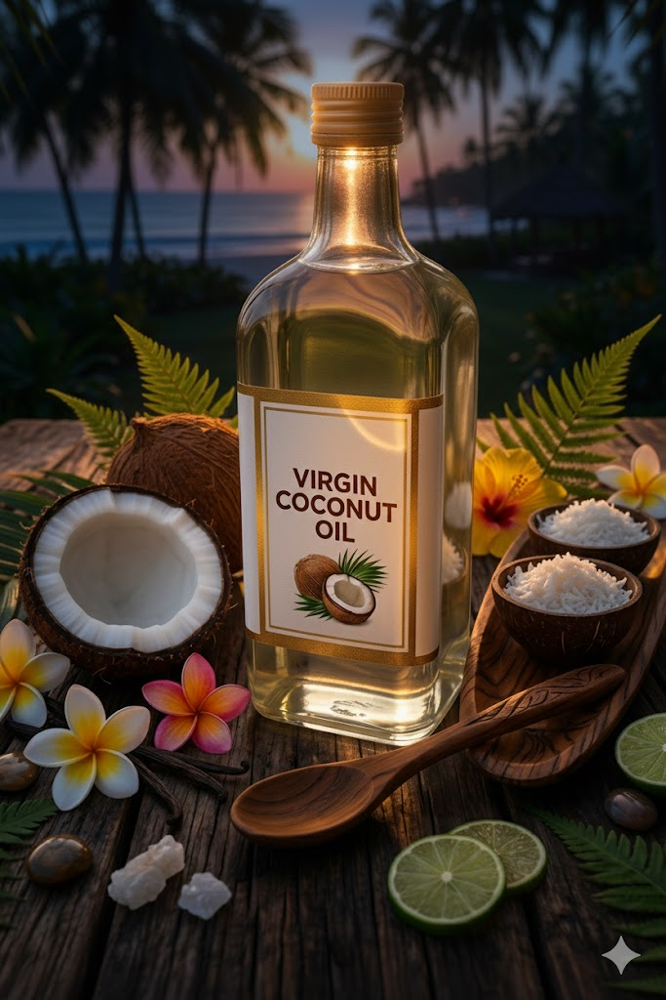

1. Siapkan parutan kelapa, kemudian tambahkan air 500 ml
2. Remas parutan kelapa hingga menghasilkan santan, lalu saring untuk memisahkan ampas kelapa
3. Masukkan santan ke dalam kantong plastik
4. Tambahkan larutan ragi yang telah dilarutkan dengan 50 ml air ke dalam santan, kemudian aduk hingga tercampur merata
5. Ikat kantong plastik dengan erat untuk memulai proses fermentasi
6. Setelah 24 jam, akan terbentuk tiga lapisan, yaitu lapisan atas berupa minyak kelapa, lapisan tengah berupa blondo atau ampas santan, dan lapisan bawah berupa air
7. Lubangi bagian bawah plastik pada lapisan air hingga tersisa lapisan minyak dan blondo
8. Saring minyak menggunakan saringan dan corong hingga memperoleh minyak yang jernih (tidak ada blondo)
9. Tuangkan virgin coconut oil yang telah diperoleh ke dalam wadah produk
10. Virgin coconut oil siap untuk dikonsumsi
